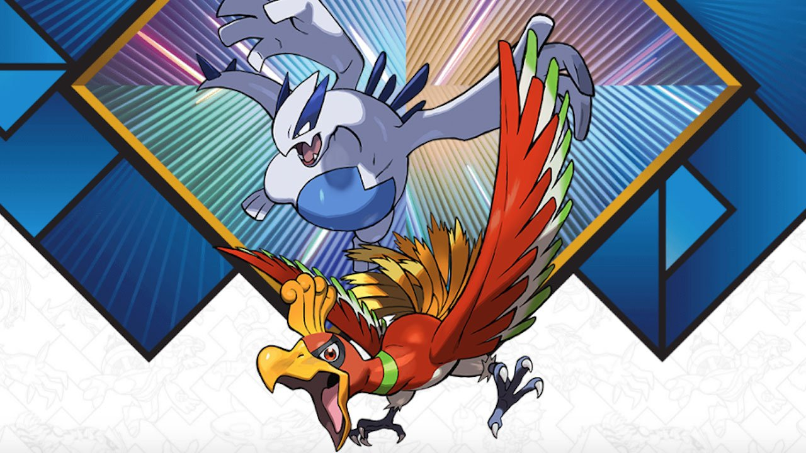

A melhor geração
Um pouco sobre:
Pokémon HeartGold é um remake do clássico Pokémon Gold (Geração II), lançado originalmente para o Game Boy Color. Desenvolvido pela Game Freak e publicado pela Nintendo e The Pokémon Company, HeartGold foi lançado para o Nintendo DS em 2009 (no Japão) e 2010 (no resto do mundo), junto com sua contraparte SoulSilver.
Os 3 iniciais

Em Pokémon HeartGold, os três starters oferecidos pelo Professor Elm são Chikorita (Planta), Cyndaquil (Fogo) e Totodile (Água), cada um com características únicas: Chikorita evolui para Meganium, sendo defensivo e com movimentos de suporte, mas fraco contra vários tipos; Cyndaquil vira Typhlosion, um especialista em Ataque Especial e velocidade, ótimo contra líderes como Bugsy e Pryce; já Totodile se transforma em Feraligatr, um monstro físico com golpes como Aqua Tail e Crunch, ideal para early e late-game. Enquanto Cyndaquil é o mais ofensivo e Totodile o mais versátil, Chikorita exige mais estratégia devido às suas fraquezas. No geral, Totodile e Cyndaquil são os mais populares, mas a escolha depende do estilo de jogo—eu sempre vou de Totodile pelo Feraligatr arrasador!
Lendarios
Em Pokémon HeartGold, os dois lendários principais são Ho-Oh (a ave sagrada do fogo, exclusiva do SoulSilver) e Lugia (o guardião dos mares, exclusivo do HeartGold), ambos com tipos poderosos—Ho-Oh é Fogo/Voador com alta resistência e a habilidade Regenerator, enquanto Lugia é Psíquico/Voador, focado em defesa e com a lendária Multiscale (em jogos posteriores). Capturá-los envolve resolver quebra-cabeças na Torre Tin (Ho-Oh) e no Templo do Mar (Lugia), e eles são essenciais para a lore de Johto, representando equilíbrio entre destruição e renascimento. Seu design icônico e stats lendários os tornam pilares da equipe em batalhas
Volte para o Inicio da página